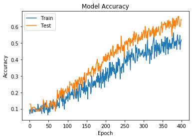
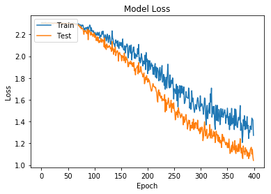

16/16 [==============================] - 109s 7s/step - loss: 2.0391 - acc: 0.2695 - val_loss: 1.9373 - val_acc: 0.3125
Epoch 174/400
16/16 [==============================] - 108s 7s/step - loss: 2.0825 - acc: 0.2539 - val_loss: 1.9034 - val_acc: 0.3477
Epoch 175/400
16/16 [==============================] - 110s 7s/step - loss: 2.0848 - acc: 0.2305 - val_loss: 1.9425 - val_acc: 0.3320
Epoch 176/400
16/16 [==============================] - 109s 7s/step - loss: 1.9815 - acc: 0.2773 - val_loss: 1.8657 - val_acc: 0.3750
Epoch 177/400
16/16 [==============================] - 105s 7s/step - loss: 2.0381 - acc: 0.2747 - val_loss: 1.8818 - val_acc: 0.3789
Epoch 178/400
16/16 [==============================] - 110s 7s/step - loss: 1.9787 - acc: 0.2969 - val_loss: 1.8280 - val_acc: 0.3867
Epoch 179/400
16/16 [==============================] - 109s 7s/step - loss: 2.0147 - acc: 0.2617 - val_loss: 1.8872 - val_acc: 0.4023
Epoch 180/400
16/16 [==============================] - 114s 7s/step - loss: 2.0063 - acc: 0.3164 - val_loss: 1.8944 - val_acc: 0.3594
Epoch 181/400
16/16 [==============================] - 108s 7s/step - loss: 1.9950 - acc: 0.2822 - val_loss: 1.8965 - val_acc: 0.3281
Epoch 182/400
16/16 [==============================] - 106s 7s/step - loss: 2.0697 - acc: 0.2617 - val_loss: 1.9142 - val_acc: 0.3398
Epoch 183/400
16/16 [==============================] - 107s 7s/step - loss: 2.0219 - acc: 0.3008 - val_loss: 1.8372 - val_acc: 0.3789
Epoch 184/400
16/16 [==============================] - 107s 7s/step - loss: 2.1081 - acc: 0.2305 - val_loss: 1.9412 - val_acc: 0.3320
Epoch 185/400
16/16 [==============================] - 109s 7s/step - loss: 1.9536 - acc: 0.2852 - val_loss: 1.8522 - val_acc: 0.3555
Epoch 186/400
16/16 [==============================] - 109s 7s/step - loss: 1.9865 - acc: 0.2578 - val_loss: 1.8517 - val_acc: 0.3594
Epoch 187/400
16/16 [==============================] - 108s 7s/step - loss: 1.9377 - acc: 0.3320 - val_loss: 1.8606 - val_acc: 0.3594
Epoch 188/400
16/16 [==============================] - 110s 7s/step - loss: 1.9525 - acc: 0.3164 - val_loss: 1.9046 - val_acc: 0.3203
Epoch 189/400
16/16 [==============================] - 105s 7s/step - loss: 2.0158 - acc: 0.2235 - val_loss: 1.8695 - val_acc: 0.3711
Epoch 190/400
16/16 [==============================] - 108s 7s/step - loss: 1.9903 - acc: 0.2852 - val_loss: 1.8438 - val_acc: 0.3555
Epoch 191/400
16/16 [==============================] - 108s 7s/step - loss: 1.9631 - acc: 0.2969 - val_loss: 1.8345 - val_acc: 0.3789
Epoch 192/400
16/16 [==============================] - 108s 7s/step - loss: 1.9105 - acc: 0.3203 - val_loss: 1.8090 - val_acc: 0.3867
Epoch 193/400
16/16 [==============================] - 106s 7s/step - loss: 1.9570 - acc: 0.2539 - val_loss: 1.8300 - val_acc: 0.3828
Epoch 194/400
16/16 [==============================] - 107s 7s/step - loss: 1.9302 - acc: 0.3398 - val_loss: 1.8466 - val_acc: 0.3789
Epoch 195/400
16/16 [==============================] - 110s 7s/step - loss: 1.9287 - acc: 0.3203 - val_loss: 1.7464 - val_acc: 0.4180
Epoch 196/400
16/16 [==============================] - 107s 7s/step - loss: 2.0099 - acc: 0.2656 - val_loss: 1.7661 - val_acc: 0.4180
Epoch 197/400
16/16 [==============================] - 107s 7s/step - loss: 1.8761 - acc: 0.2969 - val_loss: 1.8069 - val_acc: 0.3906
Epoch 198/400
16/16 [==============================] - 109s 7s/step - loss: 2.0340 - acc: 0.2305 - val_loss: 1.7834 - val_acc: 0.4180
Epoch 199/400
16/16 [==============================] - 106s 7s/step - loss: 1.9515 - acc: 0.3125 - val_loss: 1.8225 - val_acc: 0.3906
Epoch 200/400
16/16 [==============================] - 112s 7s/step - loss: 1.9744 - acc: 0.2773 - val_loss: 1.7889 - val_acc: 0.3906
Epoch 201/400
16/16 [==============================] - 109s 7s/step - loss: 1.8401 - acc: 0.3516 - val_loss: 1.7611 - val_acc: 0.4336
Epoch 202/400
16/16 [==============================] - 110s 7s/step - loss: 1.9630 - acc: 0.2695 - val_loss: 1.7940 - val_acc: 0.3867
Epoch 203/400
16/16 [==============================] - 108s 7s/step - loss: 1.8680 - acc: 0.3242 - val_loss: 1.7662 - val_acc: 0.3906
Epoch 204/400
16/16 [==============================] - 106s 7s/step - loss: 1.9330 - acc: 0.2852 - val_loss: 1.7798 - val_acc: 0.4180
Epoch 205/400
16/16 [==============================] - 106s 7s/step - loss: 1.9592 - acc: 0.3203 - val_loss: 1.7501 - val_acc: 0.4258
Epoch 206/400
16/16 [==============================] - 108s 7s/step - loss: 1.8773 - acc: 0.3477 - val_loss: 1.7246 - val_acc: 0.3945
Epoch 207/400
16/16 [==============================] - 108s 7s/step - loss: 1.9081 - acc: 0.3164 - val_loss: 1.6967 - val_acc: 0.4297
Epoch 208/400
16/16 [==============================] - 108s 7s/step - loss: 1.9260 - acc: 0.2708 - val_loss: 1.6781 - val_acc: 0.4414
Epoch 209/400
16/16 [==============================] - 108s 7s/step - loss: 1.9076 - acc: 0.2891 - val_loss: 1.6851 - val_acc: 0.4180
Epoch 210/400
16/16 [==============================] - 111s 7s/step - loss: 1.9192 - acc: 0.3125 - val_loss: 1.7227 - val_acc: 0.4258
Epoch 211/400
16/16 [==============================] - 108s 7s/step - loss: 1.8337 - acc: 0.3828 - val_loss: 1.7482 - val_acc: 0.3945
Epoch 212/400
16/16 [==============================] - 104s 7s/step - loss: 1.8911 - acc: 0.2943 - val_loss: 1.7280 - val_acc: 0.4102
Epoch 213/400
16/16 [==============================] - 110s 7s/step - loss: 1.8305 - acc: 0.3828 - val_loss: 1.7188 - val_acc: 0.4297
Epoch 214/400
16/16 [==============================] - 109s 7s/step - loss: 1.9069 - acc: 0.3359 - val_loss: 1.7202 - val_acc: 0.4609
Epoch 215/400
16/16 [==============================] - 109s 7s/step - loss: 1.9329 - acc: 0.3008 - val_loss: 1.7085 - val_acc: 0.4258
Epoch 216/400
16/16 [==============================] - 112s 7s/step - loss: 1.8069 - acc: 0.3516 - val_loss: 1.7139 - val_acc: 0.4453
Epoch 217/400
16/16 [==============================] - 110s 7s/step - loss: 1.9010 - acc: 0.3086 - val_loss: 1.6814 - val_acc: 0.4375
Epoch 218/400
16/16 [==============================] - 107s 7s/step - loss: 1.7979 - acc: 0.3828 - val_loss: 1.6662 - val_acc: 0.4219
Epoch 219/400
16/16 [==============================] - 108s 7s/step - loss: 1.8932 - acc: 0.3320 - val_loss: 1.6039 - val_acc: 0.4766
Epoch 220/400
16/16 [==============================] - 108s 7s/step - loss: 1.8808 - acc: 0.3516 - val_loss: 1.5790 - val_acc: 0.4844
Epoch 221/400
16/16 [==============================] - 114s 7s/step - loss: 1.8546 - acc: 0.3242 - val_loss: 1.6847 - val_acc: 0.4805
Epoch 222/400
16/16 [==============================] - 108s 7s/step - loss: 1.7732 - acc: 0.3672 - val_loss: 1.6910 - val_acc: 0.4141
Epoch 223/400
16/16 [==============================] - 107s 7s/step - loss: 1.8645 - acc: 0.3516 - val_loss: 1.6379 - val_acc: 0.4453
Epoch 224/400
16/16 [==============================] - 111s 7s/step - loss: 1.8975 - acc: 0.3125 - val_loss: 1.6654 - val_acc: 0.4258
Epoch 225/400
16/16 [==============================] - 107s 7s/step - loss: 1.7792 - acc: 0.3438 - val_loss: 1.6247 - val_acc: 0.4453
Epoch 226/400
16/16 [==============================] - 107s 7s/step - loss: 1.8084 - acc: 0.3203 - val_loss: 1.6155 - val_acc: 0.4375
Epoch 227/400
16/16 [==============================] - 107s 7s/step - loss: 1.8786 - acc: 0.2852 - val_loss: 1.6336 - val_acc: 0.4609
Epoch 228/400
16/16 [==============================] - 107s 7s/step - loss: 1.9143 - acc: 0.3125 - val_loss: 1.5891 - val_acc: 0.4609
Epoch 229/400
16/16 [==============================] - 106s 7s/step - loss: 1.7572 - acc: 0.3924 - val_loss: 1.6102 - val_acc: 0.4336
Epoch 230/400
16/16 [==============================] - 106s 7s/step - loss: 1.7915 - acc: 0.3203 - val_loss: 1.6044 - val_acc: 0.4609
Epoch 231/400
16/16 [==============================] - 106s 7s/step - loss: 1.8326 - acc: 0.3203 - val_loss: 1.5950 - val_acc: 0.4883
Epoch 232/400
16/16 [==============================] - 105s 7s/step - loss: 1.7264 - acc: 0.3843 - val_loss: 1.5916 - val_acc: 0.4922
Epoch 233/400
16/16 [==============================] - 109s 7s/step - loss: 1.8089 - acc: 0.3281 - val_loss: 1.6479 - val_acc: 0.4336
Epoch 234/400
16/16 [==============================] - 109s 7s/step - loss: 1.6957 - acc: 0.4102 - val_loss: 1.4881 - val_acc: 0.4922
Epoch 235/400
16/16 [==============================] - 111s 7s/step - loss: 1.7694 - acc: 0.3672 - val_loss: 1.6003 - val_acc: 0.4609
Epoch 236/400
16/16 [==============================] - 114s 7s/step - loss: 1.8058 - acc: 0.3633 - val_loss: 1.5008 - val_acc: 0.4766
Epoch 237/400
16/16 [==============================] - 107s 7s/step - loss: 1.7063 - acc: 0.4023 - val_loss: 1.5727 - val_acc: 0.4609
Epoch 238/400
16/16 [==============================] - 108s 7s/step - loss: 1.8321 - acc: 0.3711 - val_loss: 1.5574 - val_acc: 0.4766
Epoch 239/400
16/16 [==============================] - 110s 7s/step - loss: 1.9271 - acc: 0.2812 - val_loss: 1.5868 - val_acc: 0.4727
Epoch 240/400
16/16 [==============================] - 110s 7s/step - loss: 1.8017 - acc: 0.3477 - val_loss: 1.6166 - val_acc: 0.4414
Epoch 241/400
16/16 [==============================] - 112s 7s/step - loss: 1.7239 - acc: 0.3477 - val_loss: 1.5644 - val_acc: 0.4805
Epoch 242/400
16/16 [==============================] - 107s 7s/step - loss: 1.7082 - acc: 0.3555 - val_loss: 1.5248 - val_acc: 0.5430
Epoch 243/400
16/16 [==============================] - 110s 7s/step - loss: 1.8279 - acc: 0.3164 - val_loss: 1.5311 - val_acc: 0.4844
Epoch 244/400
16/16 [==============================] - 109s 7s/step - loss: 1.7130 - acc: 0.3516 - val_loss: 1.5594 - val_acc: 0.4727
Epoch 245/400
16/16 [==============================] - 110s 7s/step - loss: 1.7453 - acc: 0.3750 - val_loss: 1.5963 - val_acc: 0.4531
Epoch 246/400
16/16 [==============================] - 107s 7s/step - loss: 1.7801 - acc: 0.3516 - val_loss: 1.4837 - val_acc: 0.4844
Epoch 247/400
16/16 [==============================] - 113s 7s/step - loss: 1.7490 - acc: 0.3750 - val_loss: 1.5640 - val_acc: 0.4531
Epoch 248/400
16/16 [==============================] - 111s 7s/step - loss: 1.7826 - acc: 0.3337 - val_loss: 1.5505 - val_acc: 0.4883
Epoch 249/400
16/16 [==============================] - 109s 7s/step - loss: 1.7240 - acc: 0.4023 - val_loss: 1.5198 - val_acc: 0.4727
Epoch 250/400
16/16 [==============================] - 111s 7s/step - loss: 1.6065 - acc: 0.4531 - val_loss: 1.5716 - val_acc: 0.4141
Epoch 251/400
16/16 [==============================] - 108s 7s/step - loss: 1.7014 - acc: 0.4180 - val_loss: 1.5003 - val_acc: 0.5078
Epoch 252/400
16/16 [==============================] - 111s 7s/step - loss: 1.6989 - acc: 0.3750 - val_loss: 1.4952 - val_acc: 0.4922
Epoch 253/400
16/16 [==============================] - 108s 7s/step - loss: 1.6739 - acc: 0.3984 - val_loss: 1.4150 - val_acc: 0.4922
Epoch 254/400
16/16 [==============================] - 109s 7s/step - loss: 1.6554 - acc: 0.3945 - val_loss: 1.4487 - val_acc: 0.5117
Epoch 255/400
16/16 [==============================] - 114s 7s/step - loss: 1.7427 - acc: 0.3828 - val_loss: 1.4881 - val_acc: 0.5078
Epoch 256/400
16/16 [==============================] - 112s 7s/step - loss: 1.5915 - acc: 0.4219 - val_loss: 1.4639 - val_acc: 0.4922
Epoch 257/400
16/16 [==============================] - 112s 7s/step - loss: 1.7259 - acc: 0.3633 - val_loss: 1.5018 - val_acc: 0.5156
Epoch 258/400
16/16 [==============================] - 111s 7s/step - loss: 1.5346 - acc: 0.4492 - val_loss: 1.4367 - val_acc: 0.4961
Epoch 259/400
16/16 [==============================] - 107s 7s/step - loss: 1.6963 - acc: 0.3802 - val_loss: 1.5264 - val_acc: 0.4570
Epoch 260/400
16/16 [==============================] - 110s 7s/step - loss: 1.6655 - acc: 0.3906 - val_loss: 1.4810 - val_acc: 0.5078
Epoch 261/400
16/16 [==============================] - 112s 7s/step - loss: 1.7302 - acc: 0.4219 - val_loss: 1.4825 - val_acc: 0.5273
Epoch 262/400
16/16 [==============================] - 112s 7s/step - loss: 1.6206 - acc: 0.4570 - val_loss: 1.4566 - val_acc: 0.5078
Epoch 263/400
16/16 [==============================] - 112s 7s/step - loss: 1.6632 - acc: 0.4141 - val_loss: 1.4334 - val_acc: 0.5312
Epoch 264/400
16/16 [==============================] - 109s 7s/step - loss: 1.7286 - acc: 0.3984 - val_loss: 1.4515 - val_acc: 0.5156
Epoch 265/400
16/16 [==============================] - 108s 7s/step - loss: 1.6286 - acc: 0.4517 - val_loss: 1.4719 - val_acc: 0.4805
Epoch 266/400
16/16 [==============================] - 107s 7s/step - loss: 1.7247 - acc: 0.3359 - val_loss: 1.4472 - val_acc: 0.5000
Epoch 267/400
16/16 [==============================] - 107s 7s/step - loss: 1.6872 - acc: 0.4258 - val_loss: 1.4382 - val_acc: 0.5273
Epoch 268/400
16/16 [==============================] - 107s 7s/step - loss: 1.6512 - acc: 0.4414 - val_loss: 1.3694 - val_acc: 0.5078
Epoch 269/400
16/16 [==============================] - 109s 7s/step - loss: 1.7180 - acc: 0.4141 - val_loss: 1.4459 - val_acc: 0.5000
Epoch 270/400
16/16 [==============================] - 115s 7s/step - loss: 1.5647 - acc: 0.4648 - val_loss: 1.3907 - val_acc: 0.5117
Epoch 271/400
16/16 [==============================] - 107s 7s/step - loss: 1.5758 - acc: 0.4336 - val_loss: 1.4092 - val_acc: 0.5195
Epoch 272/400
16/16 [==============================] - 109s 7s/step - loss: 1.6036 - acc: 0.4297 - val_loss: 1.4245 - val_acc: 0.5312
Epoch 273/400
16/16 [==============================] - 115s 7s/step - loss: 1.6752 - acc: 0.3945 - val_loss: 1.4649 - val_acc: 0.4844
Epoch 274/400
16/16 [==============================] - 121s 8s/step - loss: 1.6233 - acc: 0.4375 - val_loss: 1.4139 - val_acc: 0.5547
Epoch 275/400
16/16 [==============================] - 113s 7s/step - loss: 1.6214 - acc: 0.4219 - val_loss: 1.3932 - val_acc: 0.5195
Epoch 276/400
16/16 [==============================] - 108s 7s/step - loss: 1.6199 - acc: 0.4102 - val_loss: 1.3298 - val_acc: 0.5703
Epoch 277/400
16/16 [==============================] - 113s 7s/step - loss: 1.6114 - acc: 0.3945 - val_loss: 1.3658 - val_acc: 0.5547
Epoch 278/400
16/16 [==============================] - 122s 8s/step - loss: 1.7084 - acc: 0.3828 - val_loss: 1.4132 - val_acc: 0.5078
Epoch 279/400
16/16 [==============================] - 155s 10s/step - loss: 1.6742 - acc: 0.3789 - val_loss: 1.3830 - val_acc: 0.5430
Epoch 280/400
16/16 [==============================] - 148s 9s/step - loss: 1.5230 - acc: 0.4883 - val_loss: 1.4089 - val_acc: 0.5234
Epoch 281/400
16/16 [==============================] - 150s 9s/step - loss: 1.5724 - acc: 0.4414 - val_loss: 1.3164 - val_acc: 0.5625
Epoch 282/400
16/16 [==============================] - 121s 8s/step - loss: 1.5043 - acc: 0.4509 - val_loss: 1.3642 - val_acc: 0.5547
Epoch 283/400
16/16 [==============================] - 111s 7s/step - loss: 1.5177 - acc: 0.4727 - val_loss: 1.3637 - val_acc: 0.5469
Epoch 284/400
16/16 [==============================] - 108s 7s/step - loss: 1.6832 - acc: 0.3906 - val_loss: 1.3377 - val_acc: 0.5312
Epoch 285/400
16/16 [==============================] - 107s 7s/step - loss: 1.5823 - acc: 0.4180 - val_loss: 1.3939 - val_acc: 0.4961
Epoch 286/400
16/16 [==============================] - 110s 7s/step - loss: 1.6161 - acc: 0.4102 - val_loss: 1.3421 - val_acc: 0.5273
Epoch 287/400
16/16 [==============================] - 110s 7s/step - loss: 1.5625 - acc: 0.4648 - val_loss: 1.4228 - val_acc: 0.5117
Epoch 288/400
16/16 [==============================] - 108s 7s/step - loss: 1.5045 - acc: 0.4394 - val_loss: 1.3257 - val_acc: 0.5508
Epoch 289/400
16/16 [==============================] - 108s 7s/step - loss: 1.4831 - acc: 0.4648 - val_loss: 1.3848 - val_acc: 0.5156
Epoch 290/400
16/16 [==============================] - 116s 7s/step - loss: 1.5152 - acc: 0.4570 - val_loss: 1.3391 - val_acc: 0.5352
Epoch 291/400
16/16 [==============================] - 111s 7s/step - loss: 1.5566 - acc: 0.4180 - val_loss: 1.3924 - val_acc: 0.5312
Epoch 292/400
16/16 [==============================] - 108s 7s/step - loss: 1.5421 - acc: 0.4219 - val_loss: 1.3904 - val_acc: 0.5234
Epoch 293/400
16/16 [==============================] - 111s 7s/step - loss: 1.5128 - acc: 0.4375 - val_loss: 1.3745 - val_acc: 0.5156
Epoch 294/400
16/16 [==============================] - 110s 7s/step - loss: 1.5878 - acc: 0.4414 - val_loss: 1.3352 - val_acc: 0.5430
Epoch 295/400
16/16 [==============================] - 111s 7s/step - loss: 1.6197 - acc: 0.4297 - val_loss: 1.4126 - val_acc: 0.5234
Epoch 296/400
16/16 [==============================] - 110s 7s/step - loss: 1.5952 - acc: 0.4258 - val_loss: 1.3311 - val_acc: 0.5664
Epoch 297/400
16/16 [==============================] - 109s 7s/step - loss: 1.5392 - acc: 0.4531 - val_loss: 1.3150 - val_acc: 0.5508
Epoch 298/400
16/16 [==============================] - 111s 7s/step - loss: 1.5216 - acc: 0.4375 - val_loss: 1.3313 - val_acc: 0.5195
Epoch 299/400
16/16 [==============================] - 104s 6s/step - loss: 1.5188 - acc: 0.4587 - val_loss: 1.2876 - val_acc: 0.5508
Epoch 300/400
16/16 [==============================] - 111s 7s/step - loss: 1.6369 - acc: 0.4180 - val_loss: 1.3461 - val_acc: 0.5586
Epoch 301/400
16/16 [==============================] - 112s 7s/step - loss: 1.5372 - acc: 0.4141 - val_loss: 1.3033 - val_acc: 0.5781
Epoch 302/400
16/16 [==============================] - 111s 7s/step - loss: 1.5485 - acc: 0.4258 - val_loss: 1.3269 - val_acc: 0.5742
Epoch 303/400
16/16 [==============================] - 111s 7s/step - loss: 1.5633 - acc: 0.4453 - val_loss: 1.3500 - val_acc: 0.5312
Epoch 304/400
16/16 [==============================] - 109s 7s/step - loss: 1.5455 - acc: 0.4219 - val_loss: 1.3342 - val_acc: 0.5391
Epoch 305/400
16/16 [==============================] - 110s 7s/step - loss: 1.5175 - acc: 0.4336 - val_loss: 1.2237 - val_acc: 0.6016
Epoch 306/400
16/16 [==============================] - 110s 7s/step - loss: 1.4659 - acc: 0.4922 - val_loss: 1.2562 - val_acc: 0.5820
Epoch 307/400
16/16 [==============================] - 111s 7s/step - loss: 1.5443 - acc: 0.4219 - val_loss: 1.3218 - val_acc: 0.5469
Epoch 308/400
16/16 [==============================] - 110s 7s/step - loss: 1.6168 - acc: 0.3945 - val_loss: 1.3975 - val_acc: 0.5312
Epoch 309/400
16/16 [==============================] - 114s 7s/step - loss: 1.6071 - acc: 0.4297 - val_loss: 1.3329 - val_acc: 0.5312
Epoch 310/400
16/16 [==============================] - 112s 7s/step - loss: 1.4512 - acc: 0.4883 - val_loss: 1.2670 - val_acc: 0.5742
Epoch 311/400
16/16 [==============================] - 108s 7s/step - loss: 1.3682 - acc: 0.5234 - val_loss: 1.2955 - val_acc: 0.5195
Epoch 312/400
16/16 [==============================] - 110s 7s/step - loss: 1.5070 - acc: 0.4258 - val_loss: 1.3294 - val_acc: 0.5625
Epoch 313/400
16/16 [==============================] - 104s 7s/step - loss: 1.5427 - acc: 0.4355 - val_loss: 1.2443 - val_acc: 0.5664
Epoch 314/400
16/16 [==============================] - 113s 7s/step - loss: 1.4256 - acc: 0.4609 - val_loss: 1.2500 - val_acc: 0.5898
Epoch 315/400
16/16 [==============================] - 110s 7s/step - loss: 1.4833 - acc: 0.4648 - val_loss: 1.2640 - val_acc: 0.5859
Epoch 316/400
16/16 [==============================] - 112s 7s/step - loss: 1.5096 - acc: 0.4609 - val_loss: 1.2881 - val_acc: 0.5703
Epoch 317/400
16/16 [==============================] - 108s 7s/step - loss: 1.5704 - acc: 0.3750 - val_loss: 1.2728 - val_acc: 0.5430
Epoch 318/400
16/16 [==============================] - 107s 7s/step - loss: 1.5060 - acc: 0.4467 - val_loss: 1.3722 - val_acc: 0.5391
Epoch 319/400
16/16 [==============================] - 110s 7s/step - loss: 1.6545 - acc: 0.4258 - val_loss: 1.2477 - val_acc: 0.5781
Epoch 320/400
16/16 [==============================] - 109s 7s/step - loss: 1.5811 - acc: 0.4375 - val_loss: 1.2888 - val_acc: 0.5430
Epoch 321/400
16/16 [==============================] - 112s 7s/step - loss: 1.7075 - acc: 0.3984 - val_loss: 1.3293 - val_acc: 0.5508
Epoch 322/400
16/16 [==============================] - 107s 7s/step - loss: 1.4393 - acc: 0.4805 - val_loss: 1.2465 - val_acc: 0.5586
Epoch 323/400
16/16 [==============================] - 107s 7s/step - loss: 1.4934 - acc: 0.4336 - val_loss: 1.2673 - val_acc: 0.5820
Epoch 324/400
16/16 [==============================] - 108s 7s/step - loss: 1.5391 - acc: 0.4648 - val_loss: 1.2644 - val_acc: 0.5898
Epoch 325/400
16/16 [==============================] - 109s 7s/step - loss: 1.4688 - acc: 0.4961 - val_loss: 1.3112 - val_acc: 0.5586
Epoch 326/400
16/16 [==============================] - 108s 7s/step - loss: 1.5388 - acc: 0.5117 - val_loss: 1.2655 - val_acc: 0.6016
Epoch 327/400
16/16 [==============================] - 109s 7s/step - loss: 1.3752 - acc: 0.5273 - val_loss: 1.3031 - val_acc: 0.5391
Epoch 328/400
16/16 [==============================] - 111s 7s/step - loss: 1.3277 - acc: 0.5586 - val_loss: 1.2065 - val_acc: 0.5820
Epoch 329/400
16/16 [==============================] - 114s 7s/step - loss: 1.5499 - acc: 0.4062 - val_loss: 1.2418 - val_acc: 0.5742
Epoch 330/400
16/16 [==============================] - 111s 7s/step - loss: 1.4873 - acc: 0.4531 - val_loss: 1.3117 - val_acc: 0.5391
Epoch 331/400
16/16 [==============================] - 108s 7s/step - loss: 1.4090 - acc: 0.4883 - val_loss: 1.2766 - val_acc: 0.5508
Epoch 332/400
16/16 [==============================] - 108s 7s/step - loss: 1.5493 - acc: 0.4492 - val_loss: 1.2815 - val_acc: 0.5820
Epoch 333/400
16/16 [==============================] - 113s 7s/step - loss: 1.4219 - acc: 0.4844 - val_loss: 1.2216 - val_acc: 0.5898
Epoch 334/400
16/16 [==============================] - 111s 7s/step - loss: 1.3740 - acc: 0.5298 - val_loss: 1.2736 - val_acc: 0.5469
Epoch 335/400
16/16 [==============================] - 111s 7s/step - loss: 1.5114 - acc: 0.4180 - val_loss: 1.2129 - val_acc: 0.5977
Epoch 336/400
16/16 [==============================] - 110s 7s/step - loss: 1.4998 - acc: 0.4375 - val_loss: 1.2554 - val_acc: 0.5664
Epoch 337/400
16/16 [==============================] - 110s 7s/step - loss: 1.3705 - acc: 0.5000 - val_loss: 1.2026 - val_acc: 0.5781
Epoch 338/400
16/16 [==============================] - 106s 7s/step - loss: 1.4120 - acc: 0.4961 - val_loss: 1.2283 - val_acc: 0.5703
Epoch 339/400
16/16 [==============================] - 110s 7s/step - loss: 1.5190 - acc: 0.4531 - val_loss: 1.2107 - val_acc: 0.5859
Epoch 340/400
16/16 [==============================] - 110s 7s/step - loss: 1.4427 - acc: 0.4883 - val_loss: 1.1613 - val_acc: 0.6016
Epoch 341/400
16/16 [==============================] - 105s 7s/step - loss: 1.4722 - acc: 0.4531 - val_loss: 1.2825 - val_acc: 0.5703
Epoch 342/400
16/16 [==============================] - 107s 7s/step - loss: 1.5146 - acc: 0.4297 - val_loss: 1.2799 - val_acc: 0.5664
Epoch 343/400
16/16 [==============================] - 110s 7s/step - loss: 1.4378 - acc: 0.4961 - val_loss: 1.2184 - val_acc: 0.5508
Epoch 344/400
16/16 [==============================] - 110s 7s/step - loss: 1.4601 - acc: 0.4648 - val_loss: 1.2558 - val_acc: 0.5469
Epoch 345/400
16/16 [==============================] - 104s 7s/step - loss: 1.4856 - acc: 0.4272 - val_loss: 1.2438 - val_acc: 0.5664
Epoch 346/400
16/16 [==============================] - 107s 7s/step - loss: 1.5078 - acc: 0.4492 - val_loss: 1.2110 - val_acc: 0.6016
Epoch 347/400
16/16 [==============================] - 110s 7s/step - loss: 1.4698 - acc: 0.4492 - val_loss: 1.2036 - val_acc: 0.5938
Epoch 348/400
16/16 [==============================] - 109s 7s/step - loss: 1.3826 - acc: 0.5234 - val_loss: 1.1855 - val_acc: 0.6289
Epoch 349/400
16/16 [==============================] - 111s 7s/step - loss: 1.4571 - acc: 0.4844 - val_loss: 1.2100 - val_acc: 0.5898
Epoch 350/400
16/16 [==============================] - 109s 7s/step - loss: 1.4372 - acc: 0.5078 - val_loss: 1.2027 - val_acc: 0.5625
Epoch 351/400
16/16 [==============================] - 104s 6s/step - loss: 1.5231 - acc: 0.4805 - val_loss: 1.1598 - val_acc: 0.5898
Epoch 352/400
16/16 [==============================] - 112s 7s/step - loss: 1.4370 - acc: 0.4492 - val_loss: 1.2014 - val_acc: 0.6172
Epoch 353/400
16/16 [==============================] - 103s 6s/step - loss: 1.3881 - acc: 0.5018 - val_loss: 1.1598 - val_acc: 0.6133
Epoch 354/400
16/16 [==============================] - 106s 7s/step - loss: 1.4463 - acc: 0.4414 - val_loss: 1.2398 - val_acc: 0.6133
Epoch 355/400
16/16 [==============================] - 109s 7s/step - loss: 1.3250 - acc: 0.5039 - val_loss: 1.1595 - val_acc: 0.6094
Epoch 356/400
16/16 [==============================] - 108s 7s/step - loss: 1.4773 - acc: 0.4805 - val_loss: 1.1062 - val_acc: 0.6289
Epoch 357/400
16/16 [==============================] - 107s 7s/step - loss: 1.3631 - acc: 0.5391 - val_loss: 1.1169 - val_acc: 0.6133
Epoch 358/400
16/16 [==============================] - 112s 7s/step - loss: 1.3988 - acc: 0.5156 - val_loss: 1.1514 - val_acc: 0.6211
Epoch 359/400
16/16 [==============================] - 111s 7s/step - loss: 1.5211 - acc: 0.4297 - val_loss: 1.1818 - val_acc: 0.5820
Epoch 360/400
16/16 [==============================] - 112s 7s/step - loss: 1.3743 - acc: 0.4922 - val_loss: 1.1212 - val_acc: 0.6211
Epoch 361/400
16/16 [==============================] - 109s 7s/step - loss: 1.4294 - acc: 0.5312 - val_loss: 1.2140 - val_acc: 0.5977
Epoch 362/400
16/16 [==============================] - 110s 7s/step - loss: 1.3842 - acc: 0.5234 - val_loss: 1.1752 - val_acc: 0.5938
Epoch 363/400
16/16 [==============================] - 110s 7s/step - loss: 1.4532 - acc: 0.4648 - val_loss: 1.1373 - val_acc: 0.5977
Epoch 364/400
16/16 [==============================] - 105s 7s/step - loss: 1.3667 - acc: 0.5292 - val_loss: 1.1481 - val_acc: 0.6367
Epoch 365/400
16/16 [==============================] - 111s 7s/step - loss: 1.5165 - acc: 0.4336 - val_loss: 1.2244 - val_acc: 0.6016
Epoch 366/400
16/16 [==============================] - 110s 7s/step - loss: 1.3623 - acc: 0.5000 - val_loss: 1.1242 - val_acc: 0.6211
Epoch 367/400
16/16 [==============================] - 109s 7s/step - loss: 1.5107 - acc: 0.4609 - val_loss: 1.1055 - val_acc: 0.6406
Epoch 368/400
16/16 [==============================] - 108s 7s/step - loss: 1.4266 - acc: 0.4805 - val_loss: 1.1801 - val_acc: 0.5898
Epoch 369/400
16/16 [==============================] - 112s 7s/step - loss: 1.3533 - acc: 0.5195 - val_loss: 1.1399 - val_acc: 0.6289
Epoch 370/400
16/16 [==============================] - 111s 7s/step - loss: 1.3449 - acc: 0.4766 - val_loss: 1.1219 - val_acc: 0.6250
Epoch 371/400
16/16 [==============================] - 113s 7s/step - loss: 1.4037 - acc: 0.4961 - val_loss: 1.1615 - val_acc: 0.6328
Epoch 372/400
16/16 [==============================] - 109s 7s/step - loss: 1.4387 - acc: 0.4648 - val_loss: 1.1939 - val_acc: 0.5977
Epoch 373/400
16/16 [==============================] - 110s 7s/step - loss: 1.4129 - acc: 0.5000 - val_loss: 1.1245 - val_acc: 0.6172
Epoch 374/400
16/16 [==============================] - 110s 7s/step - loss: 1.4337 - acc: 0.4945 - val_loss: 1.1623 - val_acc: 0.5977
Epoch 375/400
16/16 [==============================] - 111s 7s/step - loss: 1.5470 - acc: 0.4648 - val_loss: 1.2422 - val_acc: 0.5391
Epoch 376/400
16/16 [==============================] - 112s 7s/step - loss: 1.3180 - acc: 0.5312 - val_loss: 1.1571 - val_acc: 0.5742
Epoch 377/400
16/16 [==============================] - 106s 7s/step - loss: 1.3860 - acc: 0.4961 - val_loss: 1.1102 - val_acc: 0.6523
Epoch 378/400
16/16 [==============================] - 106s 7s/step - loss: 1.3567 - acc: 0.5258 - val_loss: 1.1570 - val_acc: 0.5898
Epoch 379/400
16/16 [==============================] - 108s 7s/step - loss: 1.2071 - acc: 0.5625 - val_loss: 1.0778 - val_acc: 0.6172
Epoch 380/400
16/16 [==============================] - 108s 7s/step - loss: 1.2704 - acc: 0.5352 - val_loss: 1.0596 - val_acc: 0.6484
Epoch 381/400
16/16 [==============================] - 110s 7s/step - loss: 1.4179 - acc: 0.4688 - val_loss: 1.1761 - val_acc: 0.6055
Epoch 382/400
16/16 [==============================] - 110s 7s/step - loss: 1.3615 - acc: 0.5078 - val_loss: 1.1267 - val_acc: 0.6367
Epoch 383/400
16/16 [==============================] - 108s 7s/step - loss: 1.4536 - acc: 0.4844 - val_loss: 1.1251 - val_acc: 0.5859
Epoch 384/400
16/16 [==============================] - 111s 7s/step - loss: 1.3252 - acc: 0.5078 - val_loss: 1.0948 - val_acc: 0.6367
Epoch 385/400
16/16 [==============================] - 107s 7s/step - loss: 1.4028 - acc: 0.4844 - val_loss: 1.1603 - val_acc: 0.6016
Epoch 386/400
16/16 [==============================] - 106s 7s/step - loss: 1.3312 - acc: 0.5156 - val_loss: 1.1263 - val_acc: 0.6445
Epoch 387/400
16/16 [==============================] - 108s 7s/step - loss: 1.3670 - acc: 0.5078 - val_loss: 1.1405 - val_acc: 0.6523
Epoch 388/400
16/16 [==============================] - 109s 7s/step - loss: 1.4457 - acc: 0.4609 - val_loss: 1.0812 - val_acc: 0.6367
Epoch 389/400
16/16 [==============================] - 104s 7s/step - loss: 1.3475 - acc: 0.5332 - val_loss: 1.1224 - val_acc: 0.6094
Epoch 390/400
16/16 [==============================] - 111s 7s/step - loss: 1.3645 - acc: 0.5508 - val_loss: 1.1077 - val_acc: 0.6211
Epoch 391/400
16/16 [==============================] - 112s 7s/step - loss: 1.2441 - acc: 0.5156 - val_loss: 1.0594 - val_acc: 0.6602
Epoch 392/400
16/16 [==============================] - 109s 7s/step - loss: 1.3184 - acc: 0.5195 - val_loss: 1.1124 - val_acc: 0.6562
Epoch 393/400
16/16 [==============================] - 112s 7s/step - loss: 1.3007 - acc: 0.4961 - val_loss: 1.0817 - val_acc: 0.6641
Epoch 394/400
16/16 [==============================] - 112s 7s/step - loss: 1.3588 - acc: 0.4922 - val_loss: 1.1379 - val_acc: 0.6328
Epoch 395/400
16/16 [==============================] - 110s 7s/step - loss: 1.3377 - acc: 0.5039 - val_loss: 1.1547 - val_acc: 0.6016
Epoch 396/400
16/16 [==============================] - 106s 7s/step - loss: 1.3255 - acc: 0.5469 - val_loss: 1.1634 - val_acc: 0.6016
Epoch 397/400
16/16 [==============================] - 112s 7s/step - loss: 1.4316 - acc: 0.4609 - val_loss: 1.1007 - val_acc: 0.6016
Epoch 398/400
16/16 [==============================] - 115s 7s/step - loss: 1.4229 - acc: 0.5039 - val_loss: 1.1444 - val_acc: 0.6211
Epoch 399/400
16/16 [==============================] - 111s 7s/step - loss: 1.4132 - acc: 0.5078 - val_loss: 1.0738 - val_acc: 0.6445
Epoch 400/400
16/16 [==============================] - 111s 7s/step - loss: 1.2726 - acc: 0.5195 - val_loss: 1.0425 - val_acc: 0.6406


_________________________________________________________________
Layer (type) Output Shape Param #
=================================================================
conv2d (Conv2D) (None, 100, 100, 32) 832
_________________________________________________________________
conv2d_1 (Conv2D) (None, 100, 100, 64) 51264
_________________________________________________________________
max_pooling2d (MaxPooling2D) (None, 50, 50, 64) 0
_________________________________________________________________
conv2d_2 (Conv2D) (None, 50, 50, 128) 204928
_________________________________________________________________
conv2d_3 (Conv2D) (None, 50, 50, 128) 409728
_________________________________________________________________
conv2d_4 (Conv2D) (None, 50, 50, 128) 409728
_________________________________________________________________
max_pooling2d_1 (MaxPooling2 (None, 25, 25, 128) 0
_________________________________________________________________
flatten (Flatten) (None, 80000) 0
_________________________________________________________________
dense (Dense) (None, 1024) 81921024
_________________________________________________________________
dropout (Dropout) (None, 1024) 0
_________________________________________________________________
dense_1 (Dense) (None, 512) 524800
_________________________________________________________________
dropout_1 (Dropout) (None, 512) 0
_________________________________________________________________
dense_2 (Dense) (None, 128) 65664
_________________________________________________________________
dropout_2 (Dropout) (None, 128) 0
_________________________________________________________________
dense_3 (Dense) (None, 10) 1290
=================================================================
Total params: 83,589,258
Trainable params: 83,589,258
Non-trainable params: 0
_________________________________________________________________
In [1]:
In [2]: